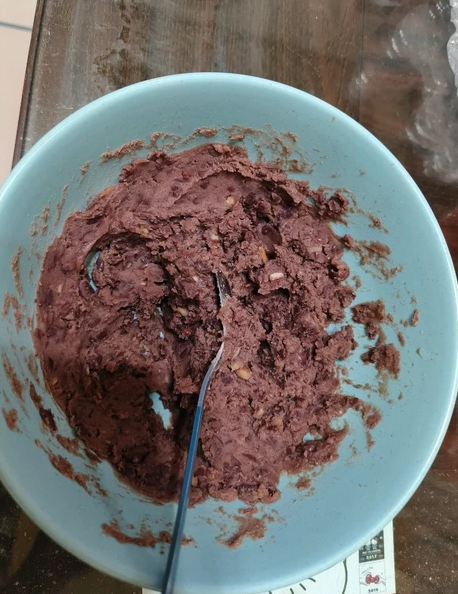
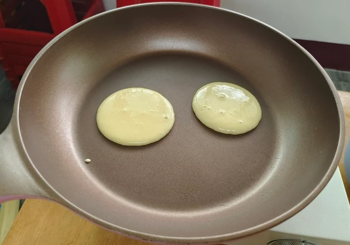
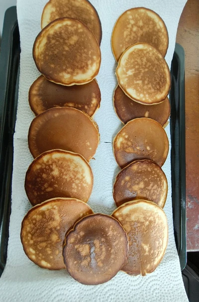

食材&作法
紅豆 1杯
底筋麵粉 130g
泡打粉 3g
砂糖（粉漿） 70g 拌紅豆（1米杯）
蜂蜜 20g
雞蛋 2顆
水（粉漿） 40g煮紅豆3米杯
奶油 10g
1.紅豆洗凈放進電子鍋加3杯水，用糙米行程2小時，加入1杯糖，奶油，拌勻壓成泥。
2. 把麵粉，糖，雞蛋，泡打粉，水，蜂蜜，攪勻後冷藏30分鍾。
3. 小火鍋內放少許油，用湯匙加入麵糊，待麵糊有起泡即可翻面。
4. 把紅豆餡夾入麵皮裡即完成。